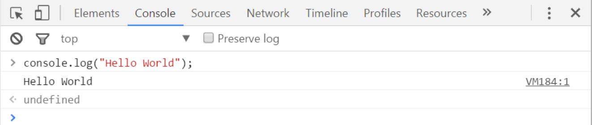
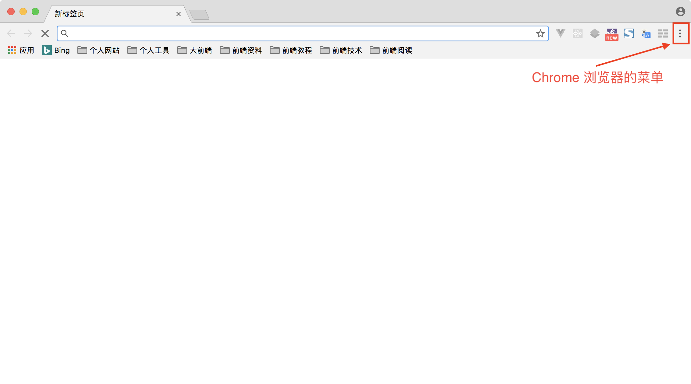
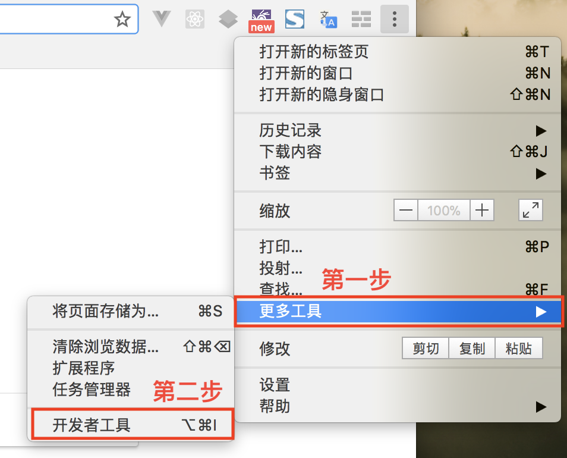
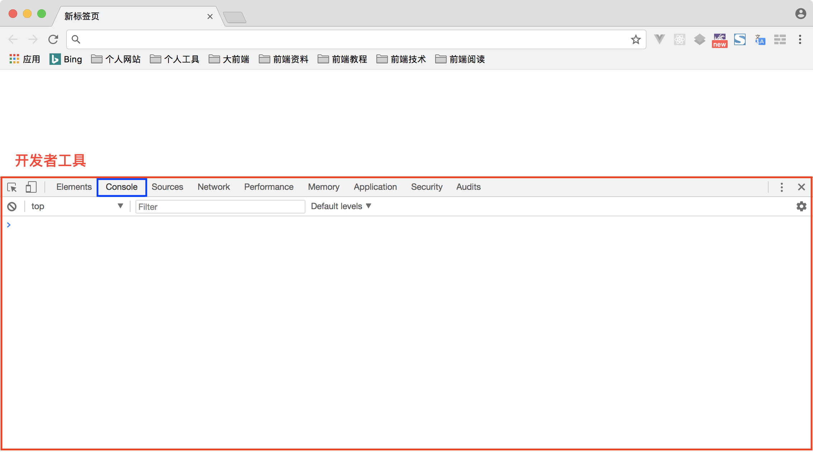
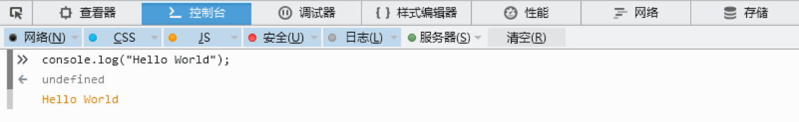
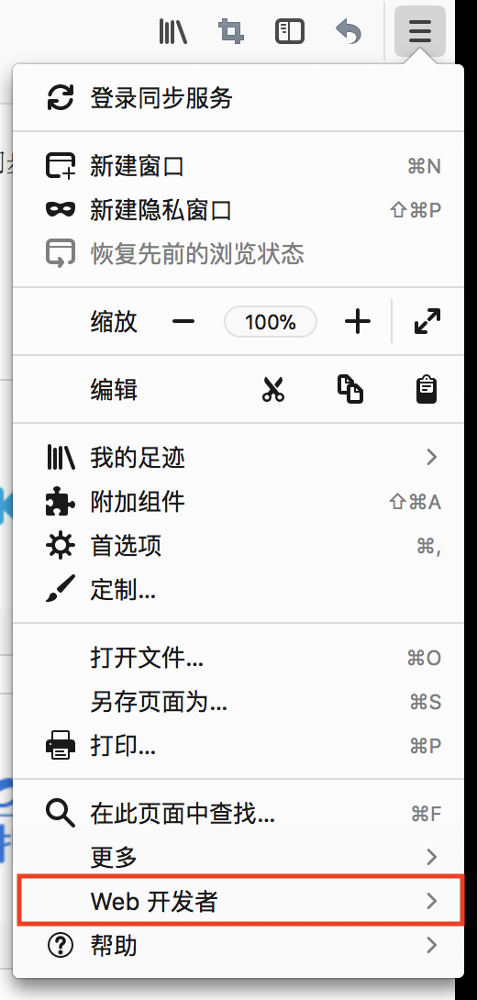
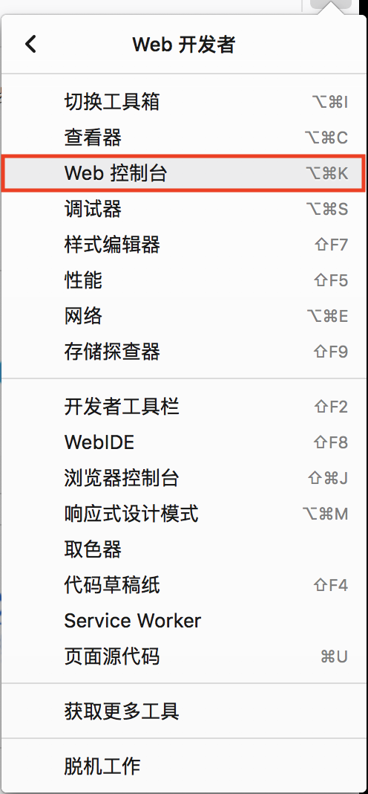
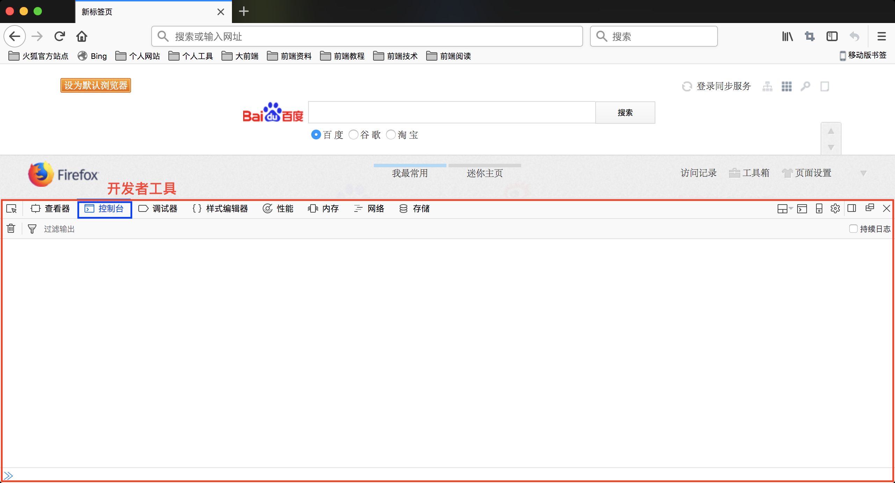
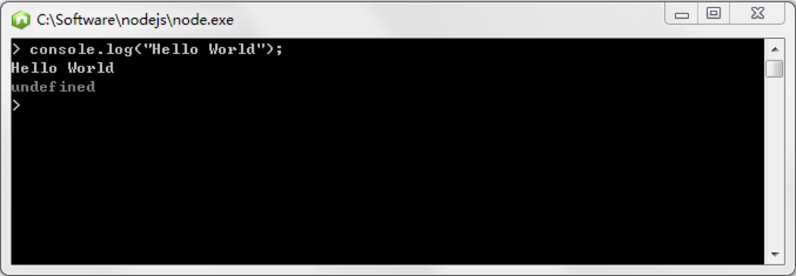
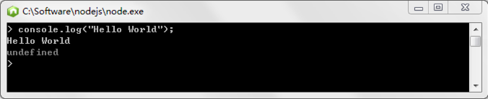

JavaScript 语言目前比较主流的运行方式有两种。
一种是基于浏览器环境，这也是 JavaScript 最初也是最主流的一种运行方式。但由于目前网络环境越发复杂，可以内嵌浏览器的环境也越来越多。例如 PC 端浏览器、移动端浏览器、微信内置浏览器等。
一种是基于解释器环境，这种方式目前主要是以 Node.js 环境为主的环境。
基于浏览器
基于浏览器环境的这种方式，我们目前的测试是使用了浏览器自带的开发者工具实现的。这里我们主要测试 Chrome 浏览器和 Firefox 浏览器，当然其他浏览器也都提供了相关功能。
Chrome 浏览器
我们可以通过 Chrome 浏览器提供的开发者工具的 console 功能测试 JavaScript 代码，如下图所示:

Chrome 浏览器如何开启开发者工具
1. 打开 Chrome 浏览器，点击右上角的【菜单】，如下图所示。

2. 在弹出的窗口中，选择【更多工具】中的【开发者工具】，如下图所示。

这时在 Chrome 浏览器的窗口中可以看到【开发者工具】的界面，如下图所示。

> 说明: Chrome 浏览器的【开发者工具】功能也可以通过快捷键方式打开，但不同操作系统的不同版本的快捷键可能不相同。
Firefox 浏览器
我们也可以通过 Firefox 浏览器提供的开发者工具的控制台功能测试 JavaScript 代码，如下图所示:

Firefox 浏览器如何开启开发者工具
1. 打开 Firefox 浏览器，点击右上角的【菜单】，如下图所示。
2. 在弹出的窗口中，选择【Web 开发者】选项，如下图所示。

3. 在弹出的窗口中，选择【Web 控制台】选项，如下图所示。

这时在 Firefox 浏览器的窗口中可以看到【开发者工具】的界面，如下图所示。

说明: Firefox 浏览器的【开发者工具】功能也可以通过快捷键方式打开，但不同操作系统的不同版本的快捷键可能不相同。
基于解释器
独立的 JavaScript 解释器是非浏览器环境运行 JavaScript 脚本代码的环境。目前最流行的 JavaScript 解释器为 Node.js，Node.js 是一个基于 Chrome V8 引擎的 JavaScript 运行环境。

第一个程序
下面，我们通过 Node.js 环境运行第一个 JavaScript 程序。当然，这个程序并没有什么实际意义，只是让你先感受一下 JavaScript 语言。
1. 点击程序 Node.js，运行 Node.js 命令行模式。
2. 输入以下代码，回车进行运行，并查看结果。
